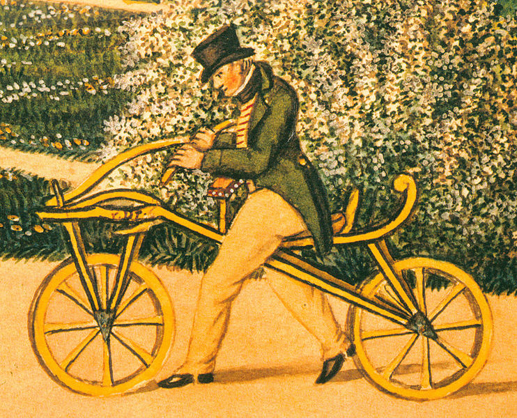

A mais antiga das bicicletas< foi chamada em seu país de origem, a França, de “cavalinho-de-pau”. Este importante meio de transporte surgiu na cidade de Paris em 1818. Esta primeira versão não possuía pedais e provocava muito cansaço em que andava com ela.
No ano de 1840, o ferreiro escocês chamado Kirkpatrick Macmillan inventou um tipo de pedal, colocado junto à roda traseira por meio de um manete. Este sistema era semelhante ao daqueles carrinhos de pedais usados por crianças. Este dispositivo deu a bicicleta mais rapidez e estabilidade.
Em 1855, o ferreiro francês especialista em carruagens, Pierre Michaux, inventou o pedal. Este foi instalado num veículo de duas rodas traseiras e uma dianteira. Chamado de velocípede, é considerado a primeira bicicleta moderna.
A primeira bicicleta a possuir um sistema com corrente ligada às rodas foi projetada por H.J.Lawson, no ano de 1874. Seu terceiro modelo, a “Bicyclette”, foi desenhado em 1879. Esta bicicleta já possuía maior estabilidade e segurança.
Na década de 1880, o inventor inglês John Kemp Starley projetou uma bicicleta semelhante as atuais. Possuía guidão, rodas de borracha, quadro, pedais e correntes.